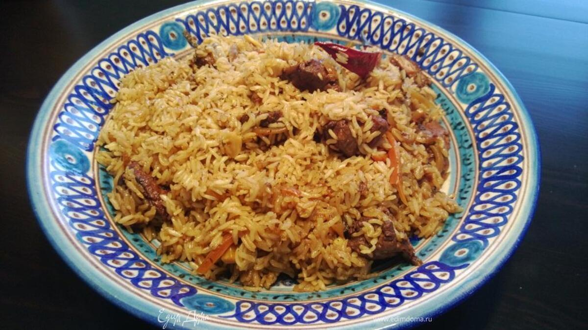

Ингредиенты:
- Рис — 500 г
- Баранина или говядина — 500 г
- Морковь — 3–5 шт.
- Лук — 2–3 шт.
- Растительное масло — 120–150 мл
- Чеснок — 4–5 зубчиков
- Вода — 600 мл
- Соль — по вкусу
Специи и приправы:
- Барбарис — 1 ч.л.
- Зира (кумин) — 0.5 ч.л.
- Красный перец — по вкусу
- Черный перец — по вкусу
- Лавровый лист — 1–2 шт.
Приготовление:
- Обжарить мясо до золотистой корочки.
- Добавить лук и морковь, тушить 5–7 минут.
- Добавить специи, залить горячей водой, тушить 20–25 минут.
- Промытый рис выложить слоями, накрыть крышкой, готовить 20–25 минут.
- За 5 минут до конца вставить чеснок, дать настояться 10 минут.
- Аккуратно перемешать и подавать.
Пищевая ценность на порцию (~300 г):
- Калории: 480 ккал
- Белки: 22 г
- Жиры: 20 г
- Углеводы: 55 г
- Клетчатка: 3 г
← Назад